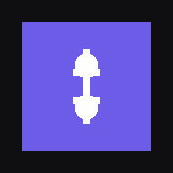

Native iOS app — tap below to install directly on your iPhone.
Install AppAfter tapping Install, confirm when iOS asks. If prompted, go to Settings → General → VPN & Device Management and trust your developer certificate, then open Subs from your home screen.